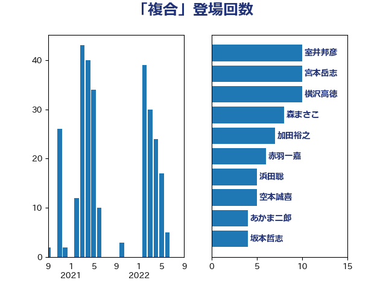

単語「複合」

| 室井邦彦 | 日本維新の会 | 10 回 |
| 宮本岳志 | 日本共産党 | 10 回 |
| 横沢高徳 | 立憲民主党 | 10 回 |
| 森まさこ | 自由民主党 | 8 回 |
| 加田裕之 | 自由民主党 | 7 回 |
| 赤羽一嘉 | 公明党 | 6 回 |
| 浜田聡 | NHK党 | 5 回 |
| 空本誠喜 | 日本維新の会 | 5 回 |
| あかま二郎 | 自由民主党 | 4 回 |
| 坂本哲志 | 自由民主党 | 4 回 |
| 野上浩太郎 | 自由民主党 | 4 回 |
| 金田勝年 | 自由民主党 | 4 回 |
| 伊東信久 | 日本維新の会 | 3 回 |
| 城井崇 | 立憲民主党 | 3 回 |
| 小泉進次郎 | 自由民主党 | 3 回 |
| 平木大作 | 公明党 | 3 回 |
| 斉藤鉄夫 | 公明党 | 3 回 |
| 木原誠二 | 自由民主党 | 3 回 |
| 柴田巧 | 日本維新の会 | 3 回 |
| 田村貴昭 | 日本共産党 | 3 回 |
| 菅義偉 | 自由民主党 | 3 回 |
| 萩生田光一 | 自由民主党 | 3 回 |
| 西田実仁 | 公明党 | 3 回 |
| 西銘恒三郎 | 自由民主党 | 3 回 |
| 野田聖子 | 自由民主党 | 3 回 |
| 高木毅 | 自由民主党 | 3 回 |
| 高橋千鶴子 | 日本共産党 | 3 回 |
| 三宅伸吾 | 自由民主党 | 2 回 |
| 中根一幸 | 自由民主党 | 2 回 |
| 小熊慎司 | 立憲民主党 | 2 回 |
| 岸真紀子 | 立憲民主党 | 2 回 |
| 後藤茂之 | 自由民主党 | 2 回 |
| 斎藤嘉隆 | 立憲民主党 | 2 回 |
| 末松信介 | 自由民主党 | 2 回 |
| 柳ヶ瀬裕文 | 日本維新の会 | 2 回 |
| 梶山弘志 | 自由民主党 | 2 回 |
| 田村まみ | 国民民主党 | 2 回 |
| 福島みずほ | 社会民主党 | 2 回 |
| 若松謙維 | 公明党 | 2 回 |
| 近藤和也 | 立憲民主党 | 2 回 |
| 道下大樹 | 立憲民主党 | 2 回 |
| 野田国義 | 立憲民主党 | 2 回 |
| 金子恵美 | 立憲民主党 | 2 回 |
| 阿部司 | 日本維新の会 | 2 回 |
| 井上信治 | 自由民主党 | 1 回 |
| 吉良よし子 | 日本共産党 | 1 回 |
| 大口善徳 | 公明党 | 1 回 |
| 大石あきこ | れいわ新選組 | 1 回 |
| 宮本周司 | 自由民主党 | 1 回 |
| 小林鷹之 | 自由民主党 | 1 回 |
| 小里泰弘 | 自由民主党 | 1 回 |
| 山口那津男 | 公明党 | 1 回 |
| 山本博司 | 公明党 | 1 回 |
| 山本香苗 | 公明党 | 1 回 |
| 山添拓 | 日本共産党 | 1 回 |
| 山田俊男 | 自由民主党 | 1 回 |
| 山田宏 | 自由民主党 | 1 回 |
| 岩渕友 | 日本共産党 | 1 回 |
| 岩田和親 | 自由民主党 | 1 回 |
| 岸田文雄 | 自由民主党 | 1 回 |
| 川田龍平 | 立憲民主党 | 1 回 |
| 平井卓也 | 自由民主党 | 1 回 |
| 平将明 | 自由民主党 | 1 回 |
| 斎藤洋明 | 自由民主党 | 1 回 |
| 朝日健太郎 | 自由民主党 | 1 回 |
| 杉尾秀哉 | 立憲民主党 | 1 回 |
| 松沢成文 | 日本維新の会 | 1 回 |
| 根本幸典 | 自由民主党 | 1 回 |
| 櫻井周 | 立憲民主党 | 1 回 |
| 武村展英 | 自由民主党 | 1 回 |
| 浦野靖人 | 日本維新の会 | 1 回 |
| 渡辺周 | 立憲民主党 | 1 回 |
| 渡辺猛之 | 自由民主党 | 1 回 |
| 玉木雄一郎 | 国民民主党 | 1 回 |
| 石井啓一 | 公明党 | 1 回 |
| 福田昭夫 | 立憲民主党 | 1 回 |
| 秋野公造 | 公明党 | 1 回 |
| 稲富修二 | 立憲民主党 | 1 回 |
| 笠井亮 | 日本共産党 | 1 回 |
| 美延映夫 | 日本維新の会 | 1 回 |
| 自見はなこ | 自由民主党 | 1 回 |
| 藤丸敏 | 自由民主党 | 1 回 |
| 赤池誠章 | 自由民主党 | 1 回 |
| 赤澤亮正 | 自由民主党 | 1 回 |
| 足立敏之 | 自由民主党 | 1 回 |
| 音喜多駿 | 日本維新の会 | 1 回 |
| 馬淵澄夫 | 立憲民主党 | 1 回 |
| 鳩山二郎 | 自由民主党 | 1 回 |